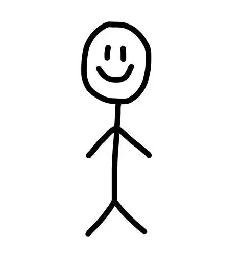

About Us!
Dominic Bieniek
Dominic is a senior at UW-Madison who enjoys sports, music, hiking, cooking, and video games. He is taking LIS 500 to fulfill his last requirements for graduation.
Lainey Becker
Lainey is a senior at UW-Madison who enjoys cybersecurity, music, baking, sports, and video games. She is taking LIS 500 to learn how to make intentional design choices in web development that are inclusive and helpful rather than harmful.
